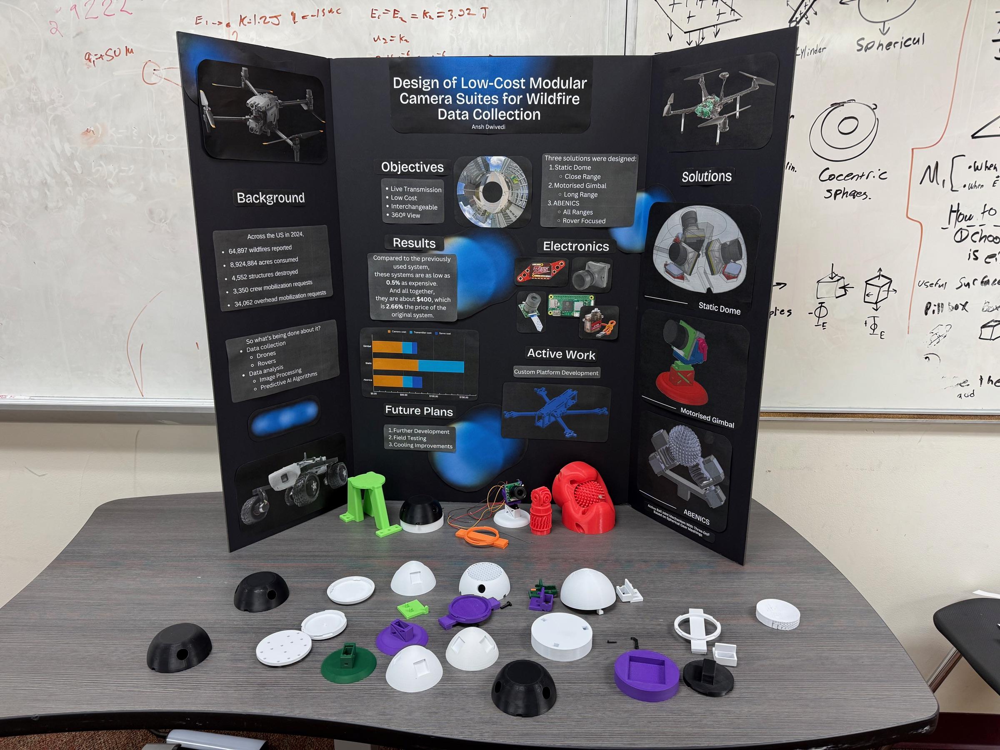
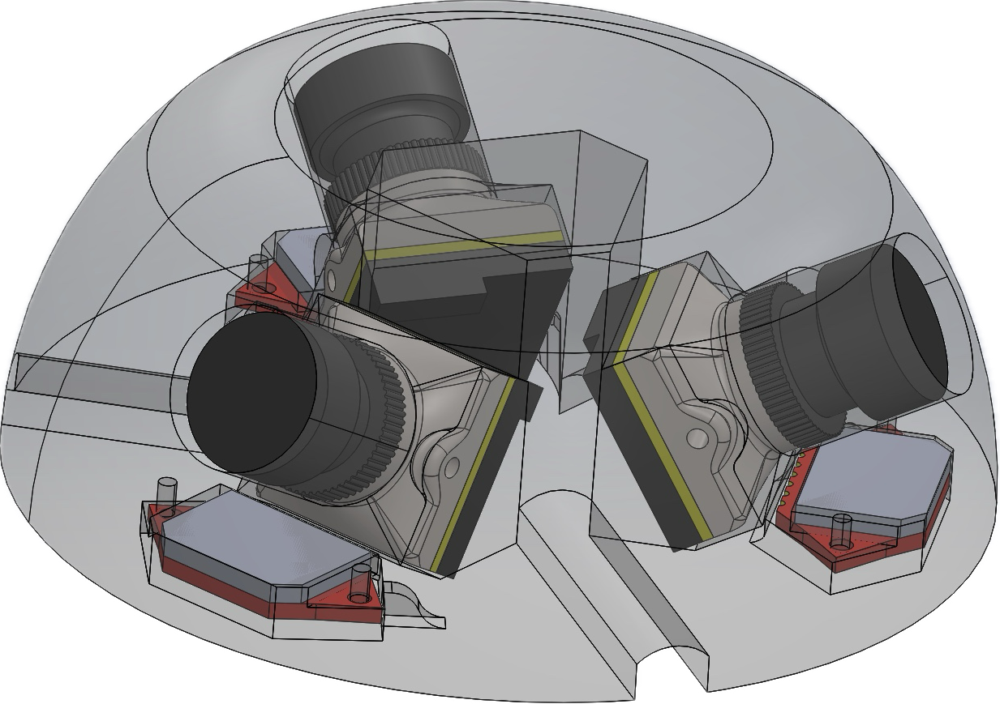
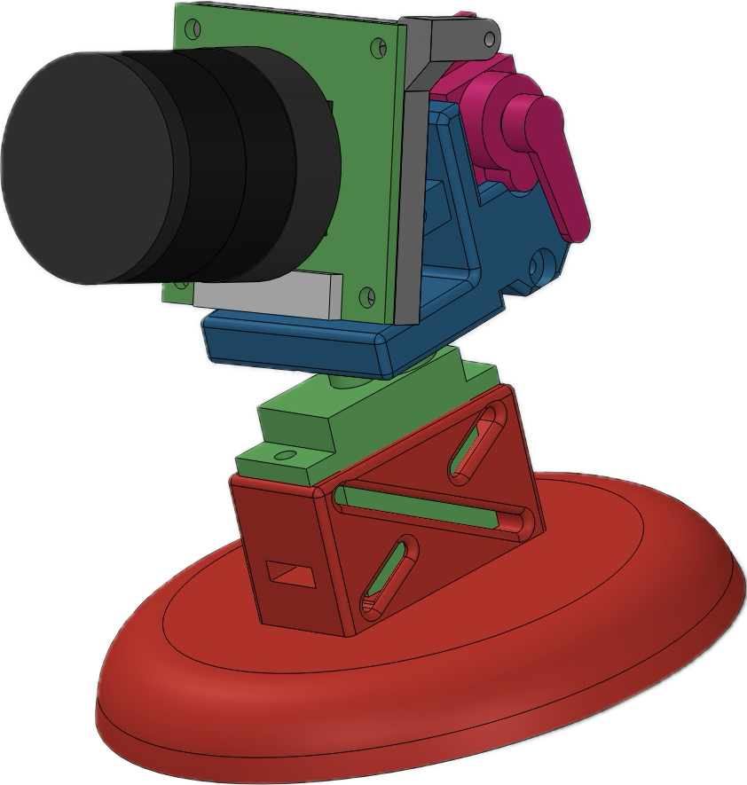
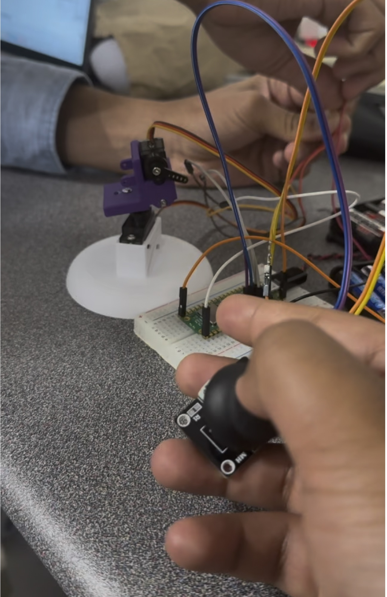
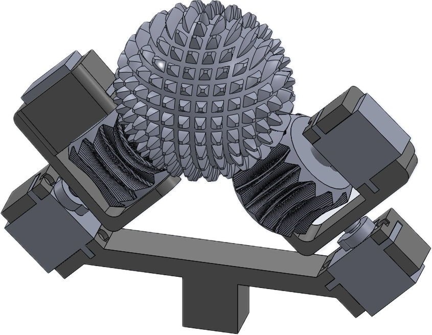

Research project · Clemson University SPRI
Modular camera suites for wildfire research
I designed and prototyped three camera modules for environmental research, exploring different tradeoffs in panoramic coverage, steerability, and mechanical complexity. A shared, replaceable mounting approach was designed for both a drone and a ground rover.
- Role
- Research intern; sole designer and prototyper
- Concepts
- Three camera modules, from fixed coverage to active aiming
- Platforms
- ModalAI VOXL m500 drone and LEO Rover
- Prototyping
- CAD, 3D printing, Raspberry Pi, cameras, and bench testing

01
The design challenge
How could a research team adapt camera coverage to different missions and vehicles without relying on one expensive integrated platform?
My mentor helped me shape the initial idea; I carried out the design and prototyping. I explored three approaches rather than settling on one mechanism up front: a fixed multi-camera dome, a conventional two-axis gimbal, and an experimental active ball joint. Each offered a different balance of coverage, moving parts, and control complexity.
02
Module one
Fixed panoramic dome

This module used three fixed Caddx Ratel Pro cameras to capture multiple directions at once. With no moving components, it avoided aiming servos and provided a straightforward baseline for comparing the moving concepts.
The tradeoff was a multi-camera system instead of one steerable view. The dome was physically prototyped and bench-tested, so I could evaluate the assembled camera system before considering vehicle integration.
03
Module two
Two-axis camera gimbal


The gimbal used a Raspberry Pi IMX219 camera and two 9-gram servos. Unlike the fixed dome, it could aim one camera toward a chosen area, at the cost of adding moving parts and control hardware.
Bench tests covered image capture, video transmission and transmission quality, and vibration. Testing also revealed significant heat, an integration concern to resolve before deploying the module on a vehicle.
04
Module three
ABENICS active ball-joint concept

The most mechanically ambitious concept adapted the ABENICS spherical-gear principle into a camera mount. Four servos actuated the compact joint to explore three rotational degrees of freedom and a broader aiming range than the conventional gimbal.
I built a physical demonstration unit to explore the mechanism. Compared with the other concepts, it demanded tighter tolerances, more difficult fabrication, and a more involved control approach; it remained an experiment rather than a deployment-ready module.
05
Shared mounting approach
Designed to move between vehicles
The camera modules were designed to be removable, with a different vehicle mount for each platform.
For the ModalAI VOXL m500 development drone, a custom mount attached beneath the aircraft. A module could rotate into place and snap secure, then be removed the same way to swap in another concept.
For the LEO Rover, a similar snap-on interface sat on a stand mounted to existing holes on top of the vehicle. This kept the camera module concept consistent while adapting its support structure to each platform.
06
Bench results and cost tradeoffs
The three prototype modules together cost about $300, including cameras, Raspberry Pis, transmitters, and batteries.
For context, the project compared that estimate with the roughly $15,000 DJI Matrice 30T platform available to the research team. This is a cost reference, not a like-for-like comparison: the prototypes are camera modules, not a replacement aircraft and integrated sensing platform.
I bench-tested the fixed dome and gimbal for image capture, video transmission and quality, and vibration; those tests also surfaced heat as an issue. The ABENICS concept reached a physical demonstration stage. The project record does not document flight or rover trials, so the results establish prototype feasibility rather than field performance.
The concepts showed that camera coverage is a mission tradeoff: multiple fixed cameras offered simultaneous views, the gimbal offered directed aiming, and the active ball joint explored a broader but more complex range of motion. A removable interface could let a research team choose a module to suit the vehicle and task.